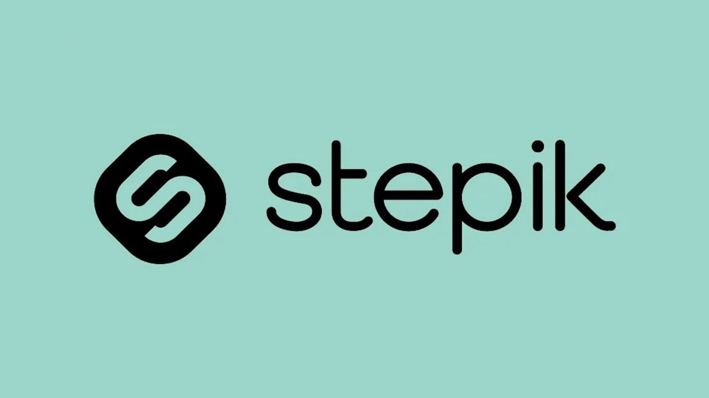

Опыт работы
Разработка классических приложений. Умение создавать вебсайты с использованием HTML и CSS, придерживаясь современных стандартов разработки. Опыт в разработке графических пользовательских интерфейсов (GUI) для приложений.
Сильные стороны
- -Стремление к профессиональному росту
- -Аналитический склад ума
- -Креативный подход к решению задач
- -Ответственность и пунктуальность
Профессиональная цель
Стремлюсь к занятию позиции программиста с фокусом на разработку веб-приложений и углубленное изучение языков программирования. Моя цель - стать выдающимся специалистом в области веб-разработки, способным создавать инновационные и эффективные решения для веб-платформ.
Проекты
-
Финансовый трекер
Мобильное приложение для управления личными финансами, включающее функции отслеживания расходов, создания бюджетов, уведомлений о предстоящих платежах и интеграции с банковскими счетами.
-

Образовательная платформа по программированию
Платформа для онлайн обучения и развития навыков в области программирования, включающая интерактивные уроки, задачи для практики, возможность общения с другими учащимися и менторами.
-
Сервис для организации событий
Сервис для организации и управления событиями, позволяющий пользователям создавать мероприятия, приглашать гостей, управлять билетами и регистрацией, а также получать статистику и отзывы после проведения мероприятия.